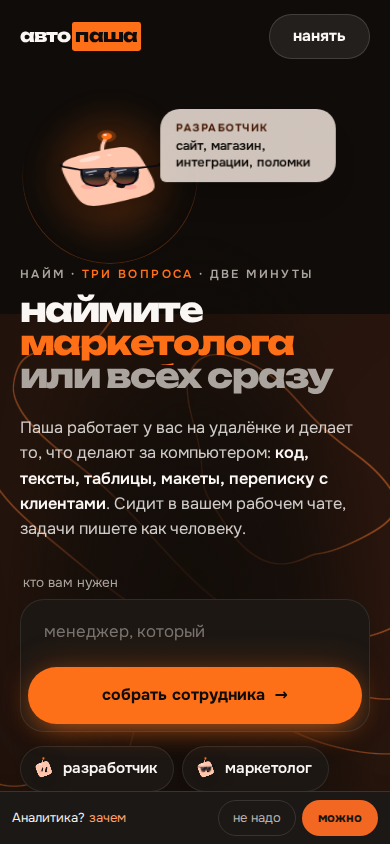
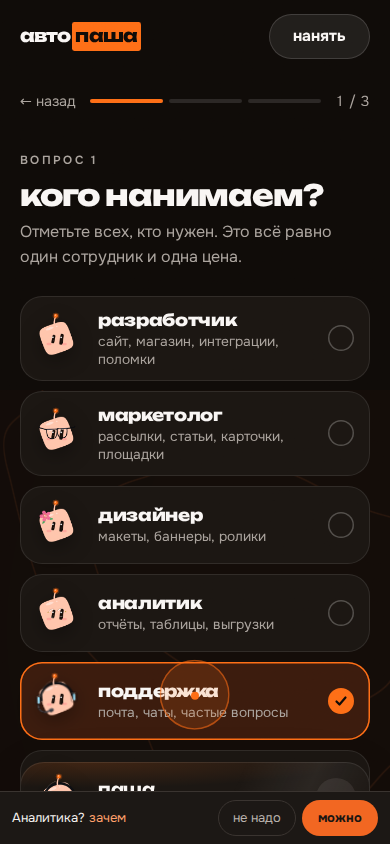
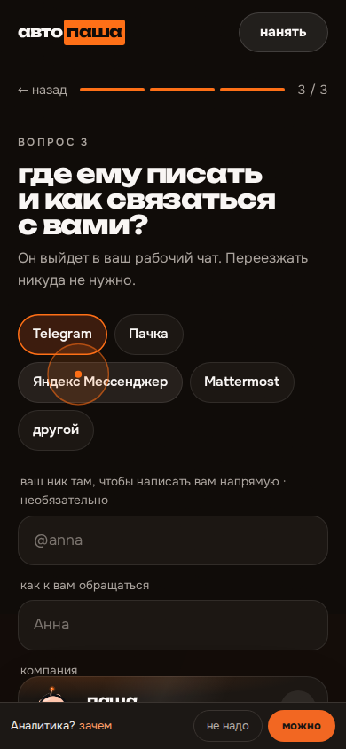
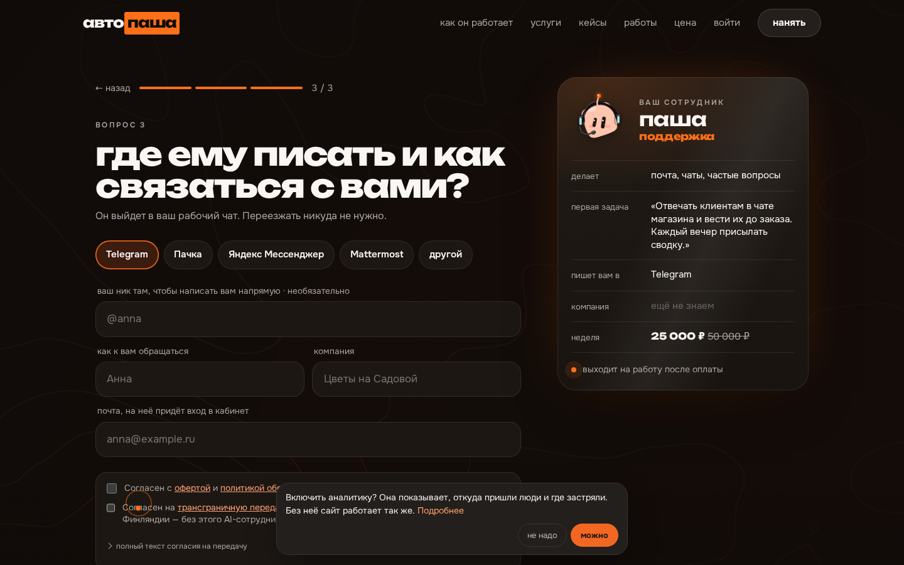

заявка · три макета · 27 октября
заявка короче:
13 действий → 5
За неделю анкету открыли 13 раз, отправили ноль. Почти все ушли с первого экрана, ещё до первого вопроса. Ниже три способа сделать заявку короче. Все три кликаются прямо в телефонах на этой странице.
где теряем людей
десять из тринадцати уходят, ничего не нажав
С сайта на анкету пришли 5 человек, и никто не начал. С рекламы в Директе 7, начали двое. То есть человек нажимает «нанять» на главной, видит второй первый экран с тем же вопросом «кто вам нужен» и закрывает.
счётчик анкеты на нашем сервере, с 23 по 27 октябряс 17 октября на сайт около 2 000 заходов, на анкету 5813 человек мало для выводов: это направление, не приговор
прошёл живую анкету сам
четыре места, где спотыкаешься

Первый экран как ещё одна главнаяБольшой заголовок, текст, цена, и только потом поле. Формы не видно, непонятно, сколько её заполнять.

«Кто нужен» спрашиваем дваждыЧеловек уже написал «менеджер» на первом экране, а следом снова «кого нанимаем?» с плитками.

Последний экран самый тяжёлыйПять кнопок мессенджеров, ник, имя, компания, почта и две галочки. Почта обязательна, хотя отвечаем в мессенджер.

Плашка cookie закрывает галочкиНа компьютере и телефоне она ложится ровно на согласия и кнопку отправки. Это починю при любом выборе.
три макета
потыкайте сами: каждый ведёт до конца
Аодна строка
вся заявка на одном экране: задача и контакт
Сразу форма, без вступления. Пишете задачу или тапаете пример, он сам печатается в поле. Рядом собирается карточка сотрудника: кого поняли из задачи, куда ответим. Контакт одним полем: ник, телефон или почта, что это, узнаём сами и меняем значок.
5было 13действий до отправки
1экран
2поля вместо 6
что поменяется
- не спрашиваем имя, компанию и роль
- почта не обязательна
- письмо из кабинета уйдёт, только если оставили почту
риск
- самый спокойный вариант, «вау» меньше всего
- без почты вход в кабинет заводим при одобрении, а не сразу
открыть вариант А →
Бсначала ответ
разговор с пашей: сначала план, потом контакт
Вместо анкеты чат. Паша здоровается и предлагает примеры. Тапнули пример, и через секунду он отвечает планом на первые дни и показывает, как будет выглядеть отчёт. Только после этого спрашивает, куда писать: кнопки Telegram, телефон, почта. Согласия приходят последним сообщением.
6было 13действий до отправки
1тап до первого ответа
0полей формы
что поменяется
- план на первые дни собирается из наших заготовок по роли, без модели и мгновенно
- те же поля в заявке, что в А
риск
- чат похож на бота поддержки, кто-то закроет
- живой ответ модели до галочки о передаче данных ставить нельзя, поэтому план из заготовок
открыть вариант Б →
Вв один тап
вход через Telegram или Яндекс ID, печатать только задачу
Две большие кнопки. Тап, «Принять» в окне Telegram, и имя с ником уже стоят. Яндекс ID отдаёт имя, почту и телефон. Дальше один вопрос: что поручить первым. Почта остаётся мелкой строкой для тех, у кого нет ни того, ни другого.
6было 13действий до отправки
0контактов печатать
2экрана
подсмотрел у
- Pi: вход Google, Apple, телефон
- Clay: вход в одну кнопку и один вопрос
- Telegram Login: штатный вход Telegram
что поменяется
- Telegram даёт право нашему боту написать человеку: ответ на заявку уходит сам
- это же и вход в кабинет без кода из письма
риск
- самый большой объём: бот, привязка домена, приложение в Яндексе, проверка входа на сервере
- часть людей не любит «войти через»
открыть вариант В →
рядом
короче любой из трёх, отличаются первым шагом
| сейчас | А · одна строка | Б · сначала ответ | В · в один тап |
|---|
| действий до отправки | 13 | 5 | 6 | 6 |
| что печатать | задачу, ник, имя, компанию, почту | задачу или тап, контакт | тап, контакт | только задачу или тап |
| первое, что видит человек | второй первый экран | форму из двух полей | Пашу, который ему отвечает | две кнопки входа |
| как отвечаем на заявку | письмом | туда, где оставил контакт | туда, где оставил контакт | бот пишет сам |
| объём работы | | одна страница | одна страница и разговор | страница, бот, Яндекс, сервер |
что пишут те, кто мерил
решает не число полей, а что спрашиваешь первым
Короче не всегда лучше: убрали не те поля, и минус 14%Marketo поднял конверсию, срезав поля. А в другом опыте из того же разбора форма с 9 до 6 полей дала минус 14%: ушли как раз те поля, которые людям было интересно заполнять. Те же 9 полей с понятными подписями дали плюс 19%.CXL ↗
Лёгкий первый шаг тянет за собой остальныеVenture Harbour разбил форму заявки на шаги, начав с простого вопроса, и конверсия выросла в разы. Оговорка: они же продавали этот конструктор форм.Venture Harbour ↗
Теряют на «слишком много и слишком рано»Zuko, которые меряют формы по полям, среди частых причин ухода с форм заявок называют много обязательных полей в самом начале. У нас наоборот: начало лёгкое, тяжёлое всё в конце, и там уходит последний.Zuko ↗
До четырёх полей хватает одного экранаОбщее правило из разборов: короткую форму не дробят, длинную дробят. У А и Б по два поля, поэтому оба на одном экране.WitsCode ↗ Zuko ↗
Вход Telegram отдаёт имя, ник, телефон и право написатьШтатный вход Telegram по стандарту OpenID: имя, ник, фото, по согласию проверенный телефон и разрешение нашему боту писать человеку. Регистрация и канал для ответа в одной кнопке.Telegram ↗
Согласия оставляю двумя отдельными галочкамиС 1 сентября 2025 согласие на обработку данных оформляется отдельно от других документов. Тексты согласий во всех трёх макетах те же, что сейчас, и пустые по умолчанию. Менять их не мне.ППТ.ру ↗
что советую
брать Б, а кнопку Telegram из В добавить следом
Люди уходят с первого экрана, ничего не нажав. В Б первое же касание даёт ответ: Паша показывает план и отчёт по их задаче. Это и «прикольно», и сразу видно, что за услуга. Контакт спрашиваем, когда человек уже вложился.
- Собираю Б на месте живой анкеты, плашку cookie убираю с кнопки.
- Контакт одним полем: ник, телефон или почта, как в А.
- Вторым шагом в «куда писать» встаёт кнопка «через Telegram»: ответ на заявку уходит ботом сам.
- Через две недели сравниваю воронку с этой неделей.
Если хочется спокойнее
А делается быстрее всех и почти не может сломаться. Если чат кажется лишним, берите его.
Чего не решат макеты
- 58 человек на анкету из 2 000 заходов: кнопка «нанять» на главной зовёт слабо.
- Директ решает маркетинг 28 октября, анкета от этого не зависит.